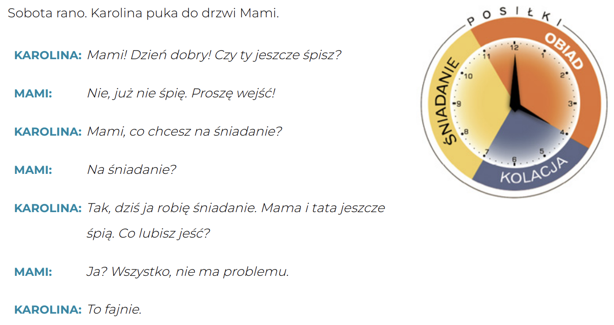
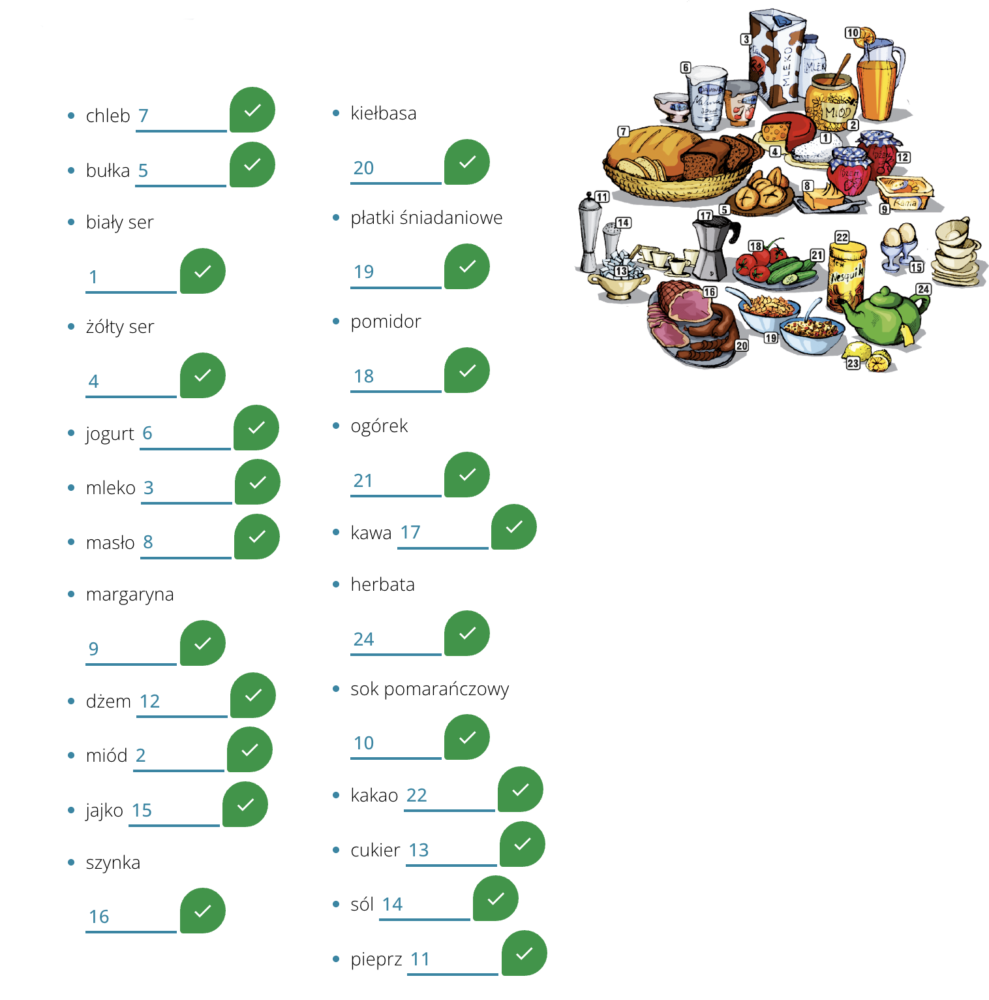
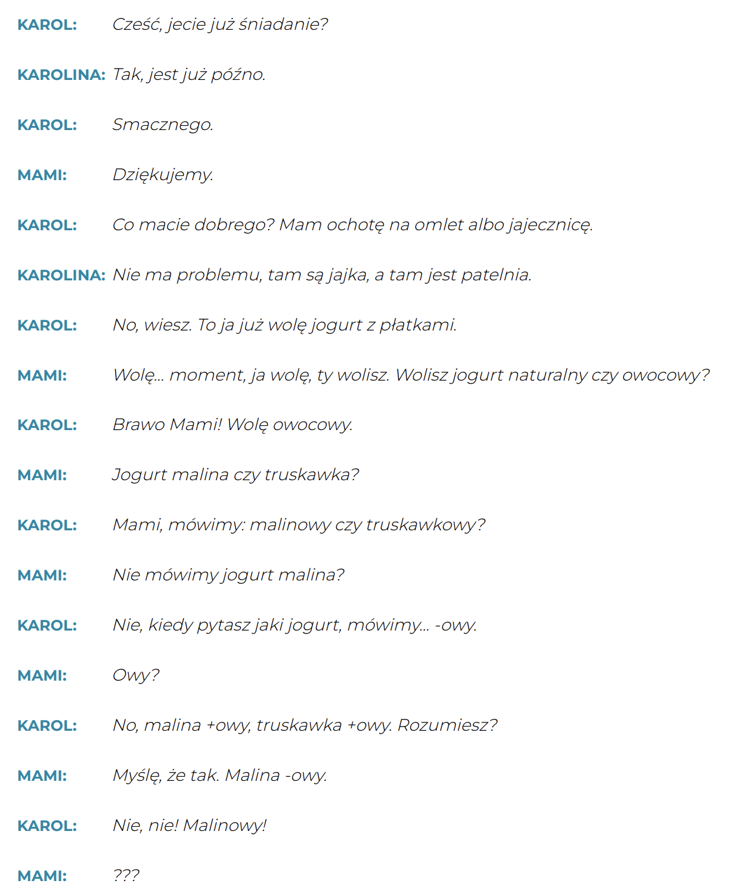
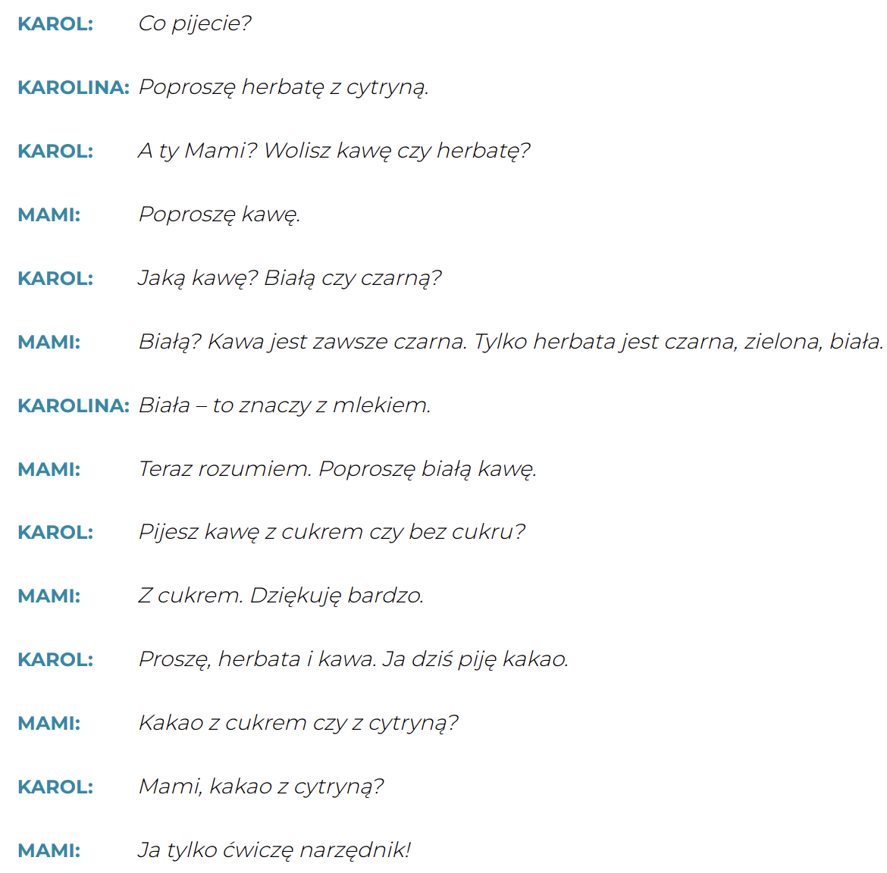
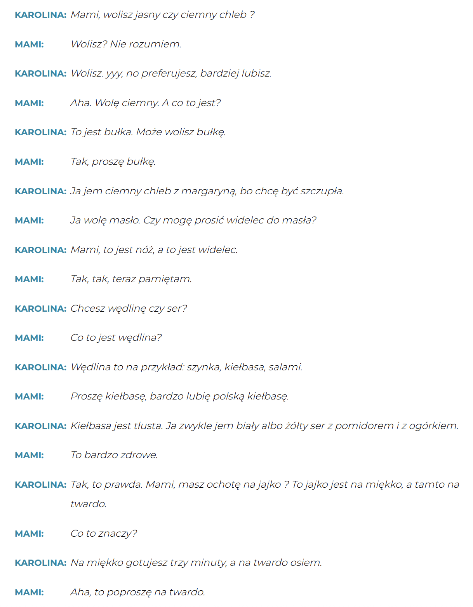
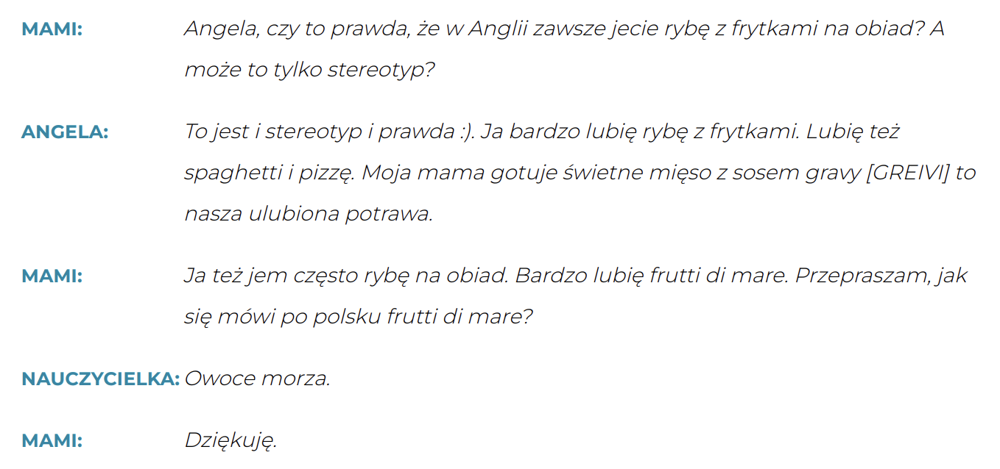

Krok Po Kroku 1
Temat 08 - Mami, jesteś głodna?
A. Mami je śniadanie
słownistwo - A. Mami je śniadanie =>
Dialog 1
Co chcesz na śniadanie? -
Что вы хотите на завтрак?
co lubisz jeść? - Какая ваша любимая еда?
Czy ty jeszcze śpisz? - Ты все еще спишь?
ja robię śniadanie - Я готовлю завтрак
już nie śpię - Я больше не сплю
Karolina puka do drzwi - Каролина стучит в дверь
Mami je śniadanie - Мами завтракает
Nie ma problemu! - Без проблем!
sobota rano - Субботнее утро
wszystko - все
Śniadanie
🧩 Przyimek „z” + narzędnik (Instrumental)
📌 Pytania:
👉 Z kim? Z czym?
🎯 WOLEĆ i MIEĆ OCHOTĘ NA
Czasowniki woleć i mieć ochotę na łączą się z biernikiem (Accusative)
❓ Partykuła „czy”
Używamy jej w pytaniach:
- Czy chcesz sok, czy herbatę?
- Chcesz sok czy herbatę?
🔗 Spójniki: i, albo, ani
➕ i – dodawanie
-
Chcę i chleb, i bułkę.
🔄 albo – wybór
- Chcę sok albo herbatę.
- Chcę albo sok, albo herbatę.
🚫 ani – podwójne zaprzeczenie
- Nie chcę soku ani herbaty.
- Nie chcę ani soku, ani herbaty.
Dialog 2
🔄 Przyimki: Z vs BEZ
Dialog 3
Dialog 4
B. Co lubimy jeść?
słownistwo - B. Co lubimy jeść? =>
C. Obiad
Dialog 5
🧠 NARZĘDNIK liczby mnogiej (Instrumental plural)
📚 Przykłady użycia:
- 👨👨👦 Oni są Francuzami.
- 🚌 Często jeżdżę autobusami.
- 🛣️ Nie lubię jeździć autostradami.
- 🌙 Nocami lubię słuchać muzyki.
- 🖍️ To dziecko lubi rysować kredkami.
- 🚶♀️ Nie mam siły ruszać nogami.
- 🐾 Ona opiekuje się zwierzętami.
- 🎭 Idę do teatru z kolegami.